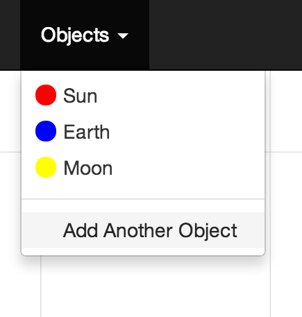
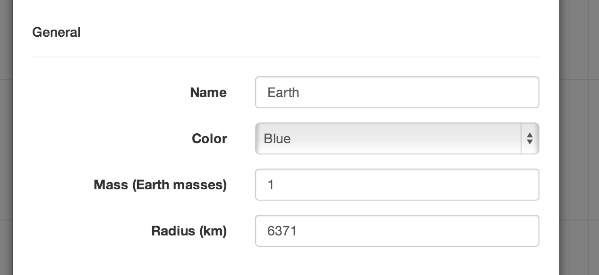
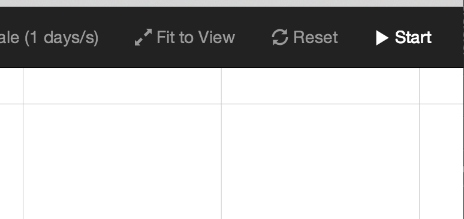

Isaac Newton's discovery that all objects attract each other with the force of gravitational attraction is amazing. Gravity is universal. The force caused by an apple falling from a tree and the motion of celestial bodies can be found using the same laws. uGravity allows one to map out a 2D system of celestical bodies. When one clicks "Start," the motion of these celestial bodies are simulated using these laws of Universal Gravity.
1. First add objects to the screen. 
2. Give objects a mass and a size, position, and distance from another.
3. Click Start and watch universal gravity go! You can zoom by scrolling and pan by clicking and dragging.
Note that there are some a limitations. The accuracy of the simulation will depend on the power of your device, the speed of the simulation, and the number of objects. Please read about the n-body problem for more information.
Please email me if you have any questions or comments.
You may also view or download the code.